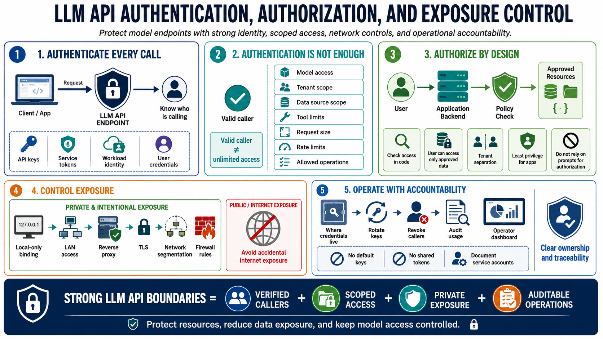

Authentication, Authorization, and Exposure Control
Connecting to LMS... Progress: in progress

Narration
LLM API endpoints should require authentication because the service consumes resources and may process sensitive data. API keys, service tokens, workload identity, or user-bound credentials can identify which caller is making a request. Authentication alone is not enough. A valid caller may still need limits on models, tenants, data sources, tools, request size, rate, or allowed operations.
Authorization should be part of the application design, not an afterthought in the model prompt. A user should only be able to submit prompts against data and functions they are allowed to access. Tenant separation matters when the same service supports multiple customers, teams, or workspaces. Least privilege also applies to applications that call the LLM service. A small internal tool should not automatically receive broad access to every model and dataset.
Exposure control is especially important for private inference endpoints. Local-only binding, LAN access, reverse proxies, TLS, network segmentation, and firewall rules all influence who can reach the service. A model endpoint that seems harmless on localhost can become a risk if it is accidentally bound to all interfaces or exposed through a misconfigured proxy. Avoid unnecessary internet exposure for experimental or private services.
Operational teams should know where credentials live, how they are rotated, how callers are revoked, and how usage is audited. Default keys, shared tokens, and undocumented service accounts create accountability problems. Strong API boundaries help prevent unauthorized resource use, accidental data exposure, and uncontrolled access to models that may be expensive or sensitive to operate.